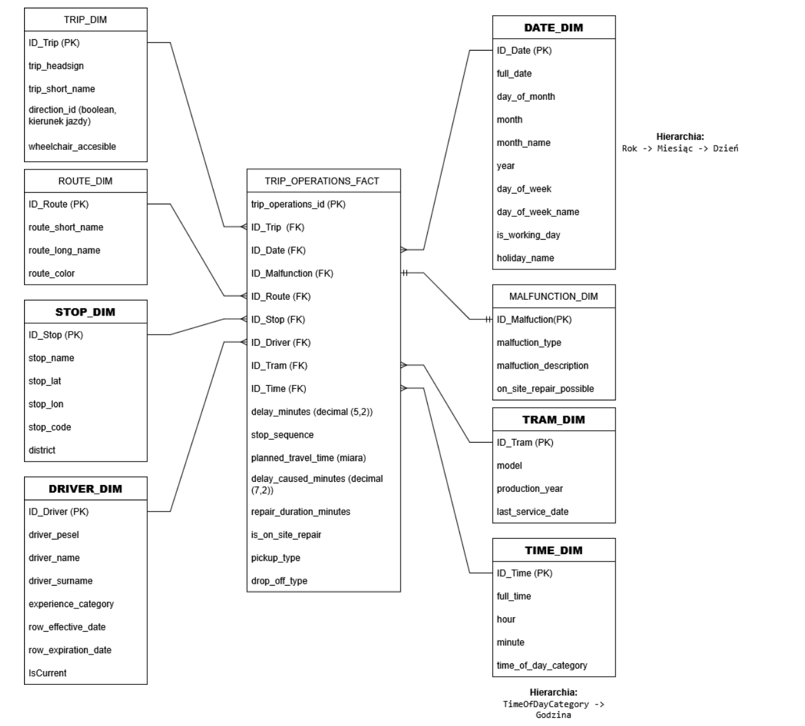
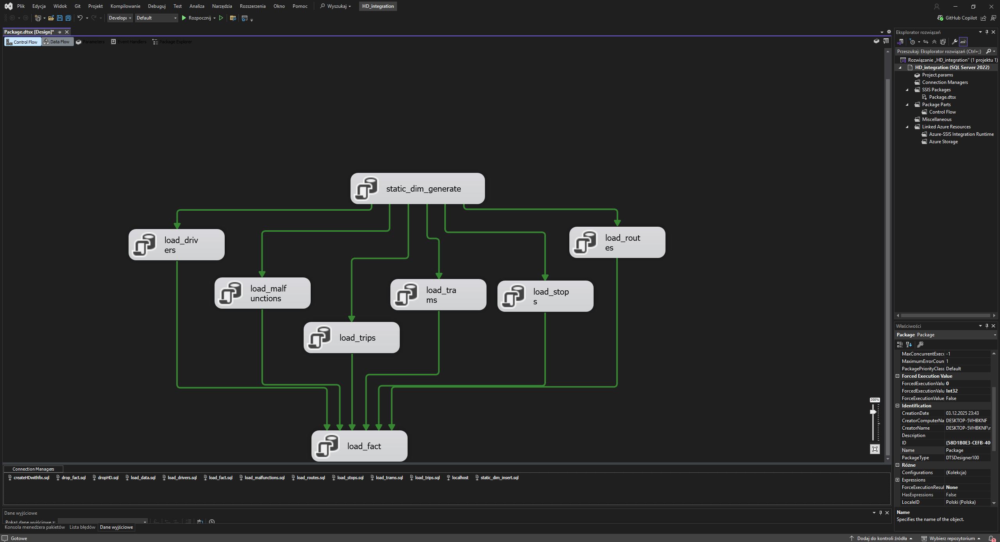

Transit BI Warehouse
Group data-warehouse project for a fictional Gdańsk tram operator. The system covers business process specification, data generation, source integration, a star-schema warehouse, ETL, OLAP, MDX queries, and reporting.
Business Goal
The modeled organization wanted to analyze delays and tram failures. The measurable goals were a monthly 2% reduction in total delay and a monthly 3% reduction in total failures.
Warehouse Design
The warehouse uses a star schema with TRIP_OPERATIONS_FACT as the central fact table. Measures include delay, planned travel time, failure-related delay, repair time, punctuality percentage, and on-site repair percentage.
- Date and time dimensions with hierarchies.
- Route, stop, tram, trip, malfunction, and driver dimensions.
- Driver dimension modeled as SCD Type 2 to track experience-category changes.


Technology
| Layer | Tools | Purpose |
|---|---|---|
| Sources | GTFS-style relational database, CSV | Schedules, stops, trips, failures, and drivers. |
| ETL | SSIS, SQL Server, Visual Studio 2022 | Incremental loading, SCD Type 2, and cube processing. |
| Analysis | SSAS, MDX, Power BI | OLAP cube, KPI queries, and dashboard reporting. |